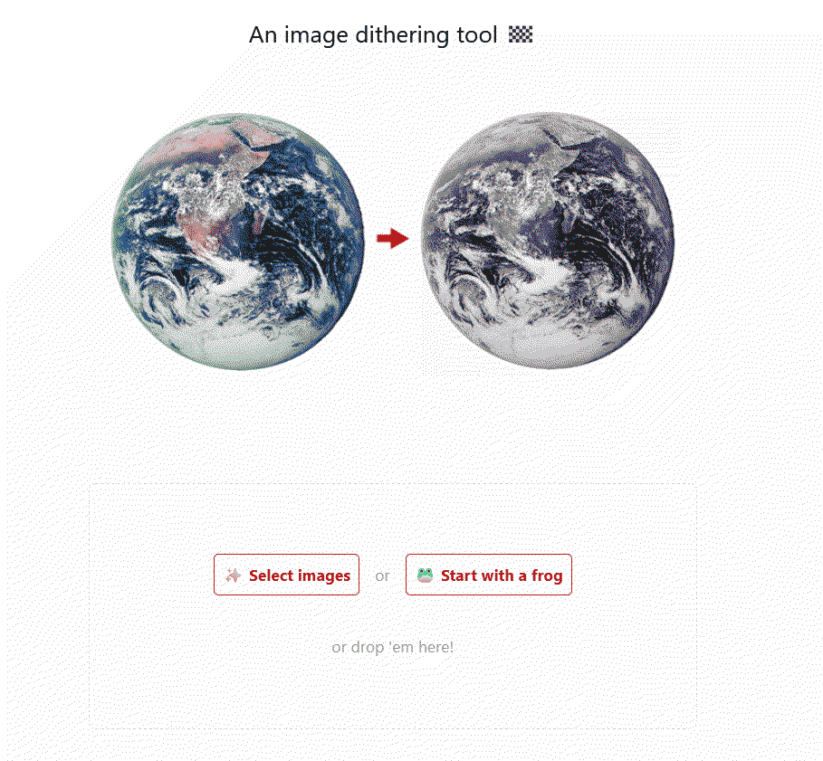
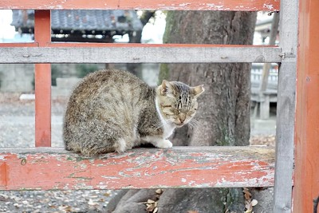
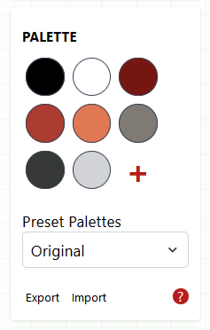
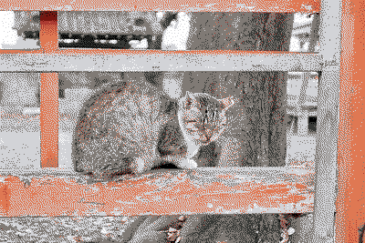
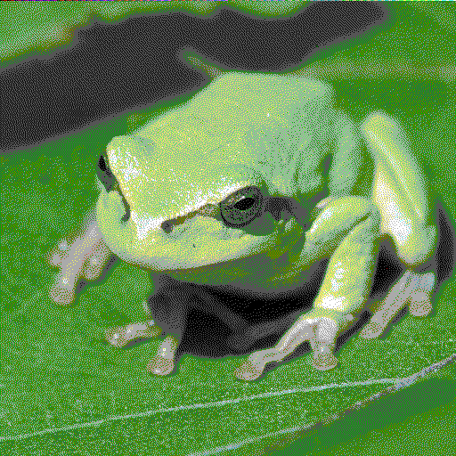
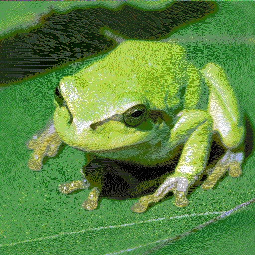
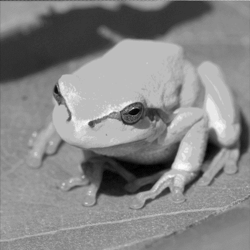

What is Dither It?
Recently, I discovered a magazine by the name of Low Tech Magazine. It uses a server to host it's website.
"So what?"" I hear you say. "Every website on the internet uses a server, or at least runs server software!"
That is true, but servers use a lot of energy, And I'm interested in reducing my energy usage (reduce my bills, and my impact on the environment.)
Low Tech Magazine is run through solar panels. Admittedly, the server is a Raspberry Pi and thus doesn't use much energy (And thus, a normal rack or tower server wouldn't work with it)
There are many ways it reduces energy usage. For example, Pages are kept to a minimum. Fancy CSS, javascript and other mainstays are missing, to save power. And (Bringing this back to the topic at hand), Images are dithered.
Dithered?
Dithered is a technique to reduce the amount of colours without suddenly including new colours (Known as banding). It was most prevalent during the late 1980s, 1990s and early 2000s.

Original image by Wapcaplet on Wikimedia Commons. Edited by Riumplus and used on Wikipedia Page on Dithering
This cat photo demonstrates both colour banding and color dithering.
On the left is the original. See that the cat's fur colour is smooth and cleanly moves from one shade to another.
In the middle is banding. notice that the colours appear to suddenly stop.
And on the right is dithering. It looks fairly similar to the original, but you can still tell.
Getting back on track
When you visit Low Tech Magazine, you'll notice that it's photos are dithered. This is because serving full colour depth images takes up more resources and thus more power.
Instead, the colours are coloured monochrome (Black & White with 4 shades of gray in between for contrast).
To do this, a application called Dither It! is used. You can find it's source code Here
How to use Dither It!
Using Dither It! is fairly simple.
To begin, take a photo and select it in your file explorer, or use the frog sample.
To demonstrate this, we'll take this photo named "Today's Cat@2020-12-03", taken By Flickr User "masatsu" (CC BY-SA 2.0 Deed)
The website will automatically generate a palette using the most common colours in the image. If that's all you want, just click the "Dither" button.
If you want to add a new colour, just click the plus button. If you want to edit a colour that was picked, click on said colour. A colour picker will appear. There are also several pre-made colour palettes. just below that is where you can export a palette you have made as well as import one.
If you aren't getting the expected results, try playing around with the Dither Mode and Algorithm settings.
Once you're finished, click the "Dither" button and click "Save"
Alternative Palettes
CGA
[{"hex":"#000000"},{"hex":"#555555"},{"hex":"#0000aa"},{"hex":"#5555ff"},{"hex":"#00aa00"},{"hex":"#55ff55"},{"hex":"#00aaaa"},{"hex":"#55ffff"},{"hex":"#aa0000"},{"hex":"#ff5555"},{"hex":"#aa00aa"},{"hex":"#ff55ff"},{"hex":"#aa5500"},{"hex":"#ffff55"},{"hex":"#aaaaaa"},{"hex":"#ffffff"}]
Recreates the CGA colour scheme used by IBM.
Apple II (Low resolution mode)
[{"hex":"#000000"},{"hex":"#99035f"},{"hex":"#4204e1"},{"hex":"#007310"},{"hex":"#7f7f7f"},{"hex":"#2497ff"},{"hex":"#aaa2ff"},{"hex":"#4f5101"},{"hex":"#f05c00"},{"hex":"#bebebe"},{"hex":"#ff85e1"},{"hex":"#12ca07"},{"hex":"#ced413"},{"hex":"#51f595"},{"hex":"#ffffff"}]
Recreates the Low Resolution, 15 colour mode of the Apple II
Grayscale 16
[{"hex":"#000000"},{"hex":"#181818"},{"hex":"#282828"},{"hex":"#383838"},{"hex":"#474747"},{"hex":"#565656"},{"hex":"#646464"},{"hex":"#717171"},{"hex":"#7e7e7e"},{"hex":"#8c8c8c"},{"hex":"#9b9b9b"},{"hex":"#ababab"},{"hex":"#bdbdbd"},{"hex":"#d1d1d1"},{"hex":"#e7e7e7"},{"hex":"#ffffff"}]
Originally created by SZIEBERTH Ádám.